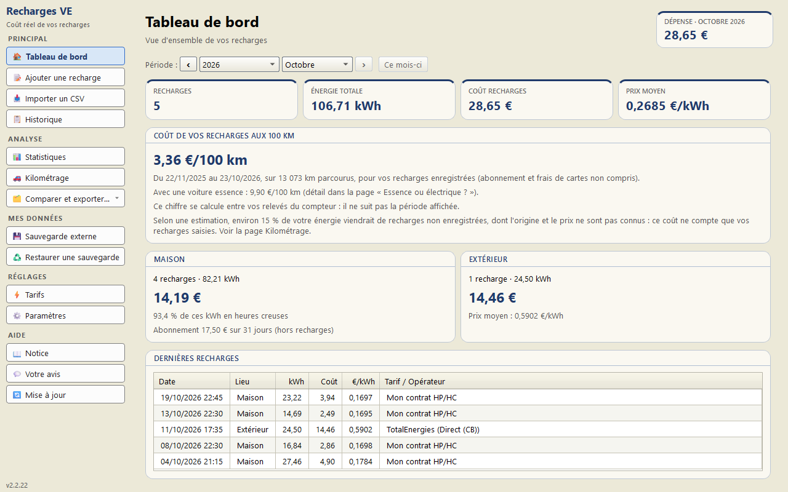
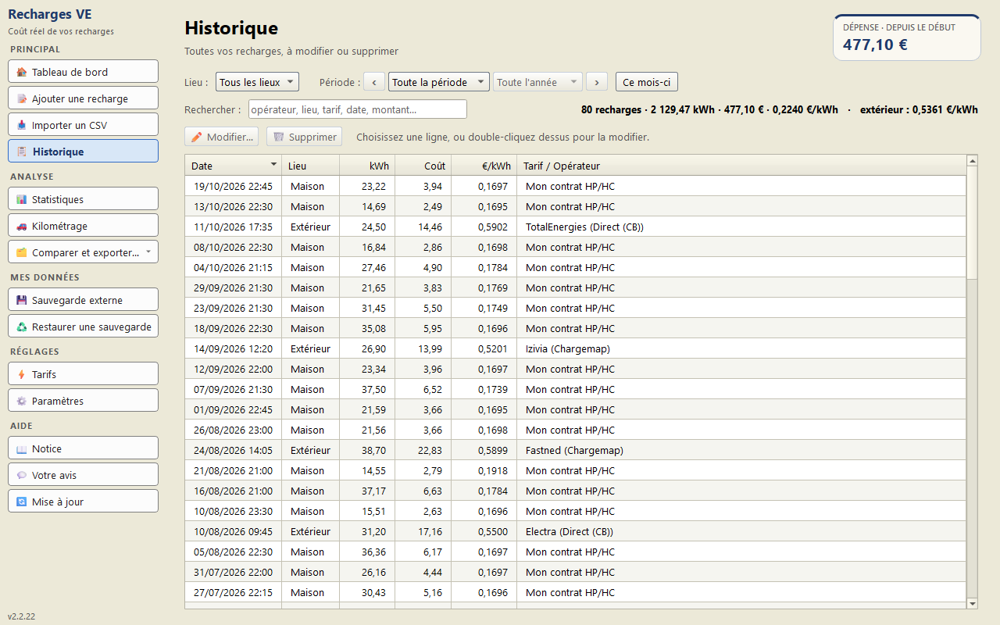
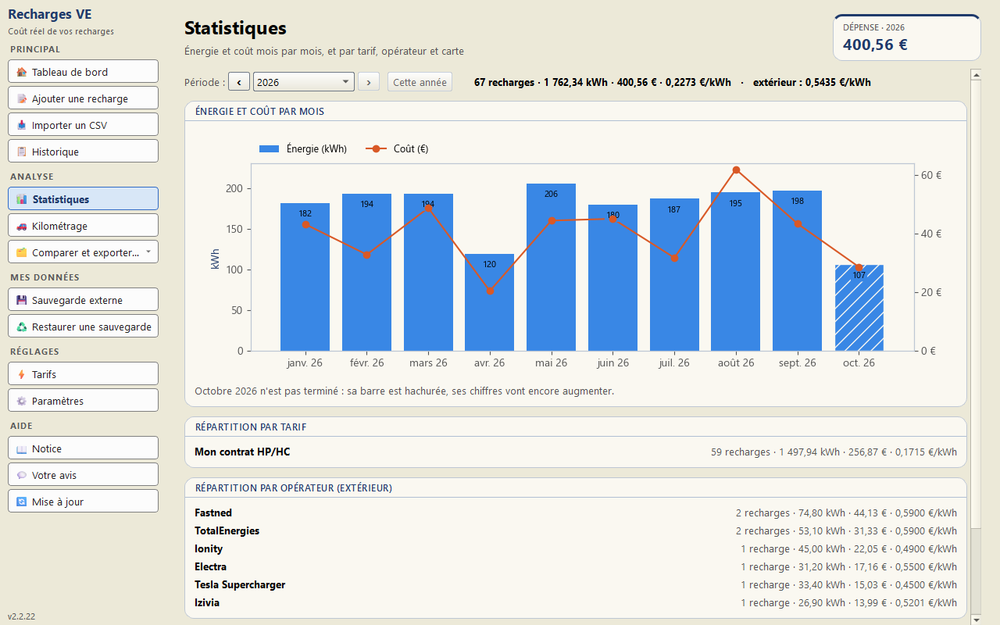
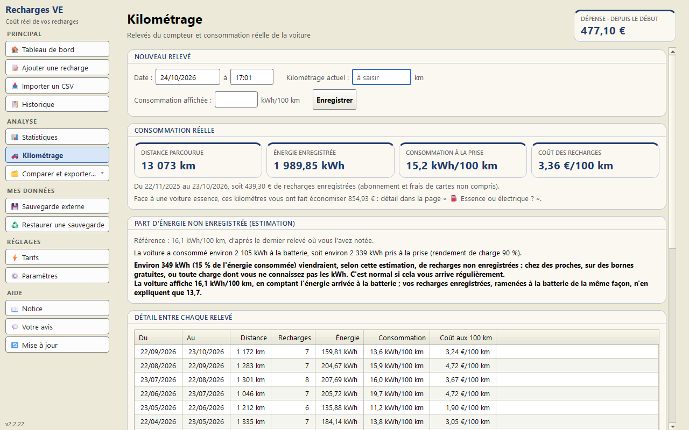
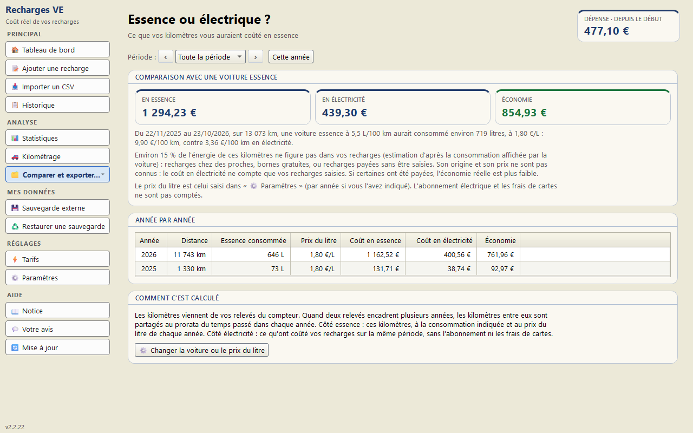
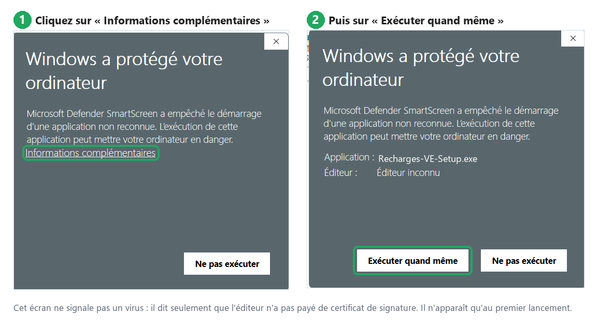

🚗 Recharges VE
Suivez vos recharges à domicile et sur les bornes publiques, leur coût et votre coût électrique aux 100 km, avec un logiciel gratuit pour Windows.
Voir le code source sur GitHub →
Suivez vos recharges à domicile et sur les bornes publiques, leur coût et votre coût électrique aux 100 km, avec un logiciel gratuit pour Windows.





Captures avec des données d'exemple.
Recharger une voiture électrique à la maison coûte plus ou moins cher selon l'heure, et sur une borne publique le prix du kWh change d'un opérateur à l'autre. Recharges VE calcule le coût réel de chaque recharge d'après votre contrat d'électricité et ce que vous avez payé dehors, puis en tire le prix moyen du kWh et le coût aux 100 km — sans abonnement, sans compte en ligne, et sans qu'aucune donnée ne quitte votre ordinateur.
Le coût de chaque charge, réparti entre heures pleines et heures creuses d'après vos plages horaires, même quand elle passe minuit ou un changement de tarif.
Le montant payé, l'énergie, et le prix du kWh qui en découle, avec l'opérateur et la carte utilisée.
Si votre borne domestique exporte l'historique de ses charges, un fichier CSV les fait entrer d'un coup, heures exactes comprises. Quelle que soit la marque : indiquez une fois quelle colonne contient quoi.
Une période par grille de prix : quand vos prix changent, les recharges passées gardent le leur. L'abonnement est affiché à part.
Ce que vos kilomètres vous auraient coûté avec une voiture essence, au total ou année par année, au prix du litre que vous indiquez.
L'achat d'une carte ou son abonnement, mensuel ou annuel, compté à part comme l'abonnement de la maison.
À partir de vos relevés du compteur, et la part d'énergie venue d'ailleurs (bornes gratuites, recharges chez des proches).
L'énergie et le coût mois par mois, par tarif et par opérateur ; export Excel détaillé ou rapport PDF imprimable.
Une copie avant chaque écriture, une restauration en deux clics, et une copie vérifiée sur clé USB quand vous le voulez.
Un thème clair par défaut, et un thème sombre au choix dans les Paramètres, pour ceux que l'écran blanc fatigue le soir.
Recharges-VE-Setup.exe.Vous préférez une version portable, sans installation ? Prenez plutôt le fichier
.zip
(rubrique « Assets » de la page) : décompressez-le où vous voulez (gardez tout le dossier
ensemble), puis double-cliquez sur Recharges-VE\Recharges-VE.exe. Vos données
vont, là aussi, dans votre dossier personnel.
Aucune installation de Python n'est nécessaire. Configuration requise : Windows 10 ou 11 (64 bits).
Pour mettre à jour, fermez l'application et lancez simplement le nouvel installeur : il remplace le programme sans toucher à vos données, rangées à part.
⚠️ Au premier lancement, Windows affiche un avertissement. C'est normal, et voici comment le passer :

Ce message ne veut pas dire que le logiciel est dangereux. Il apparaît parce que Windows ne connaît pas encore ce fichier : il ne fait confiance qu'aux programmes déjà téléchargés par beaucoup de monde, et chaque nouvelle version repart de zéro. L'application n'est pas non plus signée numériquement ; une signature afficherait le nom de l'auteur, mais l'avertissement resterait. Windows prévient donc qu'il ne connaît pas le fichier — pas que le fichier pose problème. Le code source est entièrement consultable sur GitHub.
Et si vous préférez vérifier plutôt que me croire sur parole : cet installeur a été soumis à 68 antivirus, et un seul le signale : celui de Microsoft, par une détection automatique (« !ml ») qui se trompe souvent sur les programmes écrits en Python. Ce faux positif a été signalé à Microsoft. Le rapport est public, sur VirusTotal.
Vous pouvez aussi y déposer vous-même le fichier que vous venez de télécharger, pour vous assurer qu'il est bien arrivé intact. Le site est en anglais, mais il n'y a rien à lire : cliquez sur Choose file et désignez le fichier, le résultat s'affiche en quelques secondes. C'est le réflexe à avoir pour n'importe quel programme téléchargé, pas seulement celui-ci.
Renseignez l'énergie chargée, le début et la fin de la recharge, ainsi que les prix de votre contrat d'électricité. Si vous avez des heures creuses, indiquez leurs plages horaires : Recharges VE répartit la recharge entre les périodes tarifaires. Vous pouvez aussi importer l'historique exporté par votre borne domestique.
Enregistrez le montant payé et l'énergie reçue pour retrouver le prix moyen du kWh. L'application suit vos recharges et leurs coûts ; elle ne recherche pas les bornes disponibles et ne fournit pas leurs tarifs en direct.
Vos relevés de kilométrage permettent de rapprocher les dépenses de recharge des kilomètres parcourus. Les abonnements et les frais de cartes sont présentés à part. Ce suivi porte sur l'électricité : il ne calcule pas le coût total de possession du véhicule, qui comprend aussi son achat, son assurance et son entretien.
Installation qui bloque, calcul qui surprend, fonction qui manque : dites-le dans le questionnaire en ligne. Il prend deux minutes, ne demande aucun compte, et aucune réponse n'y est obligatoire. N'y indiquez ni adresse ni numéro de carte de recharge.
Vous avez un compte GitHub ? Vous pouvez aussi ouvrir un ticket.
Toutes vos données restent sur votre ordinateur, dans votre dossier personnel
(%LOCALAPPDATA%\Recharges VE, accessible par le raccourci Dossier des données
du menu Démarrer) : vos recharges, vos tarifs et leurs sauvegardes. Rien n'est envoyé en
ligne : l'application ne crée aucun compte et ne se connecte ni à votre fournisseur, ni à
votre borne — c'est vous qui lui donnez les chiffres. Les boutons « Votre avis » et « Mise à
jour » se contentent d'ouvrir une page dans votre navigateur.
Une désinstallation laisse vos données en place ; pour tout effacer, supprimez ce dossier.